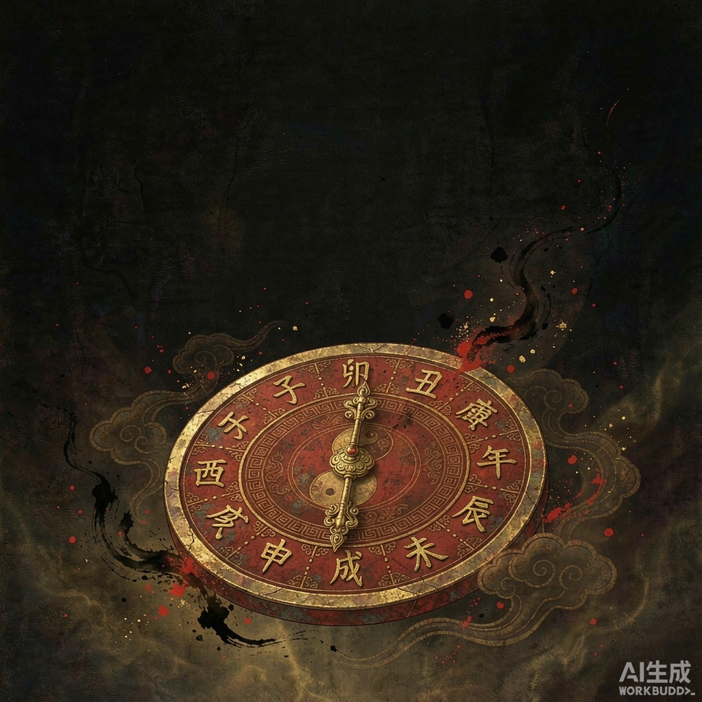
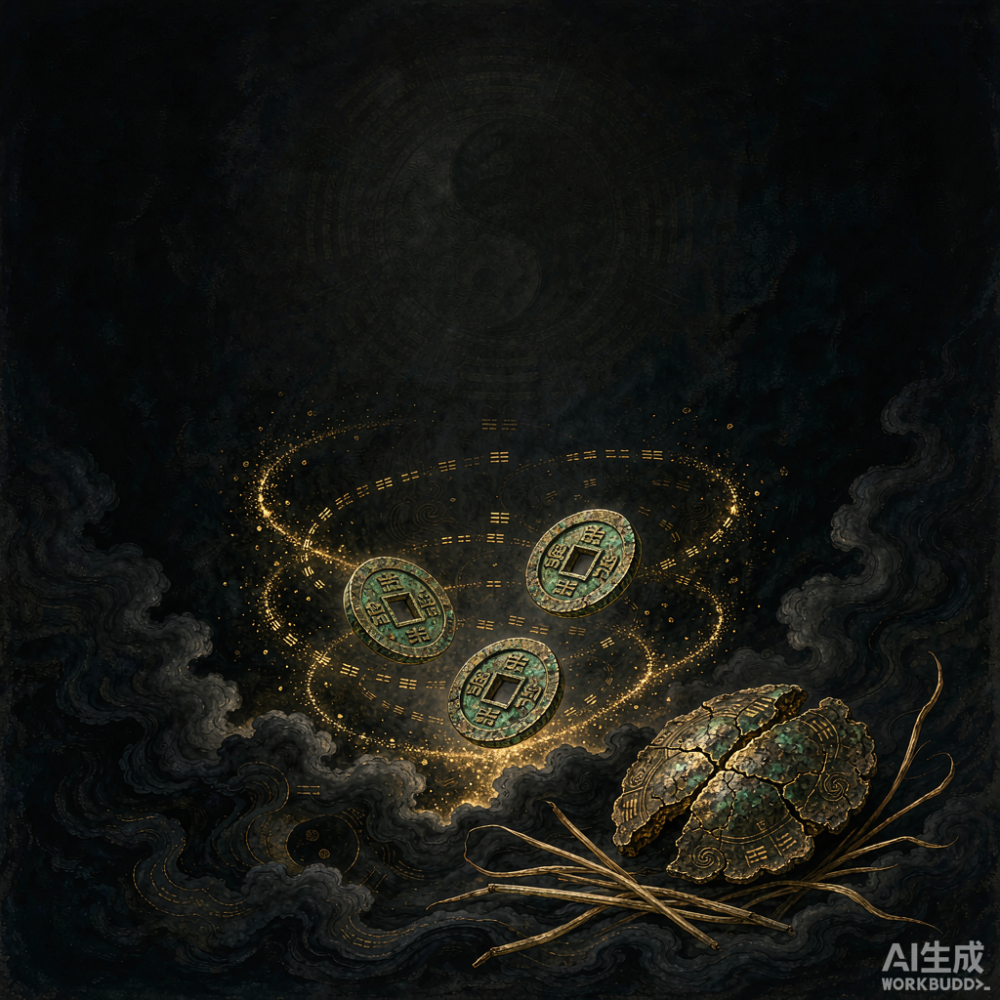
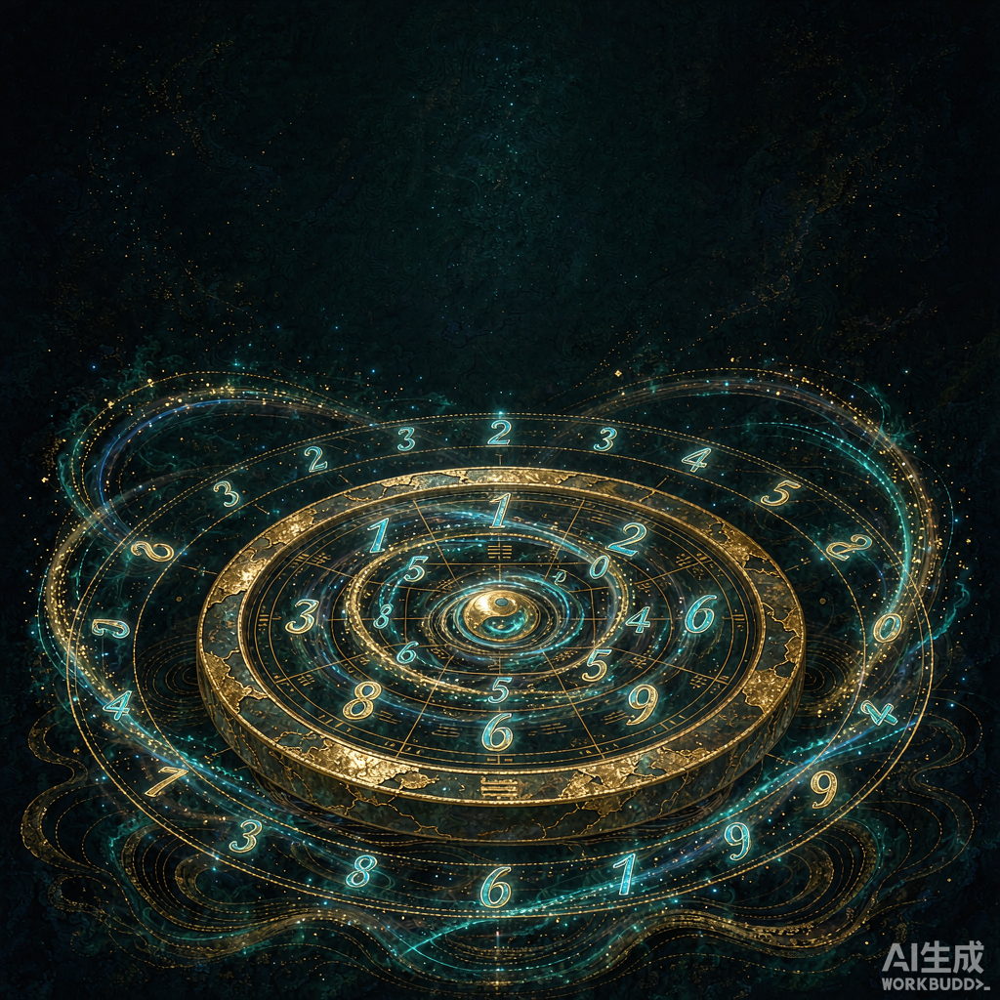
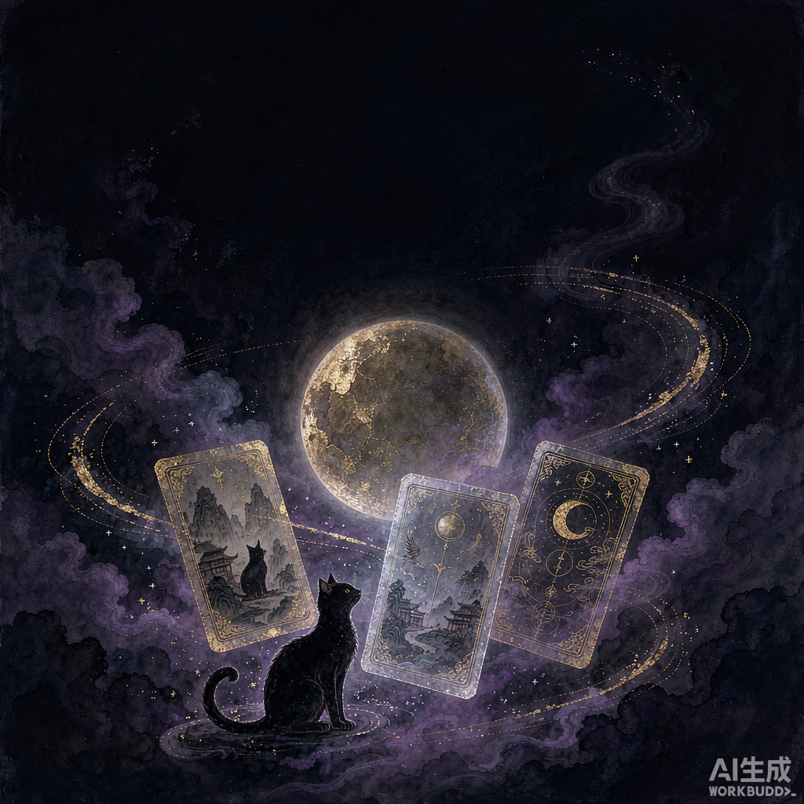

第一门 · 命理 子平八字 排盘详批 · 大运流年 · 白话命书 入 命 理 馆
第二门 · 占卜 周易起卦 静心仪轨 · 数字起卦 · 白话解卦 入 占 卜 馆
第三门 · 数字 数字能量 八星磁场 · 五行契合 · 尾号参考 入 数 字 馆
第四门 · 塔罗 塔罗占卜 78张牌精讲 · 正逆位细读 · 身边小例 入 塔 罗 馆隐私承诺：这份结果与手机号仅用于馆主陪你细聊，不存不外传、不做营销轰炸。测过几馆就带几馆，随缘即可。